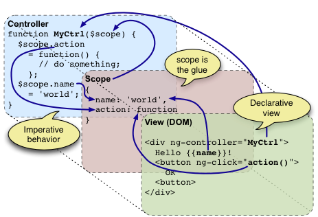

Building Enterprise Applications
with AngularJS
Created by Tom Wilson / @twilson63
WHOAMI

Tom Wilson
President of Jack Russell Software, a Division of CareKinesis
Technology Vision, Software Architecture, Developer Training
Head Instructor for CHS CodeCamp - http://chscodecamp.com
Teach: AngularJS, NodeJS, CouchDb, and DevTools
CoderDojo CHS http://coderdojochs.github.io/
Champion - NodeCopter Pilot Instructor
Agenda
- Our Problem
- What is AngularJS?
- Directives
- Conclusion
Our Problem
Our clients continued to ask/demand for richer user experiences.
JQuery event model was becoming unmaintainable.
We needed to test our JavaScript in a sane efficient way.
We wanted a JavaScript Framework that would be fun and productive.

What is AngularJS?
AngularJS is built around the belief that declarative programming should be used for building UIs and wiring software components, while imperative programming is excellent for expressing business logic. The framework adapts and extends traditional HTML to better serve dynamic content through two-way data-binding that allows for the automatic synchronization of models and views. As a result, AngularJS deemphasizes DOM manipulation and improves testability.
hhttp://en.wikipedia.org/wiki/Angular_JSHello World AngularJS App
<!doctype html>
<html ng-app>
<head>
<script src="http://code.angularjs.org/1.2.0-rc.2/angular.min.js"></script>
</head>
<body>
<p ng-init=" name='World' ">Hello {{name}}!</p>
</body>
</html>See the Pen %= penName %> by Tom Wilson (@twilson63) on CodePen
Two-Way Data Binding
<html ng-app>
<head>
<script src="http://code.angularjs.org/1.2.0-rc.2/angular.min.js"></script>
</head>
<body>
<input ng-model="name">
<p>Hello {{name}}!</p>
</body>
</html>See the Pen %= penName %> by Tom Wilson (@twilson63) on CodePen
Dependency Injection
Dependency Injection (DI) is a software design pattern that deals with how code gets hold of its dependencies.
angular.module('app')
.controller('MainCtrl', function($scope, $http, $location) {
...
});
angular.module('App', [])
.controller('HomeCtrl', function($window) {
$window.document.write('Hello World');
});
See the Pen %= penName %> by Tom Wilson (@twilson63) on CodePen
Scope
 http://docs.angularjs.org/guide
http://docs.angularjs.org/guide
Scope is the Glue
 http://docs.angularjs.org/guideServices
angular.module('myModule', [])
.factory('notify', function($window) {
var msgs = [];
return function(msg) {
msgs.push(msg);
if (msgs.length == 3) {
$window.alert(msgs.join("\n"));
msgs = [];
}
};
}]);
.controller('MainCtrl', function($scope, notify) {
notify('Hello');
notify('World');
notify('GoodBye');
});
});See the Pen %= penName %> by Tom Wilson (@twilson63) on CodePen
Services are Singletons
Directives
Built-In
- ngRepeat
- ngClick
- ...
ngRepeat
<html ng-app>
<head><title>HelloWorld</title></head>
<body>
<div ng-init=" items=[1,2,3,4] "></div>
<ul>
<li ng-repeat="item in items">
{{item}}
</li>
<script src="http://code.angularjs.org/1.2.0-rc.2/angular.min.js"></script>
</body>
</html>See the Pen %= penName %> by Tom Wilson (@twilson63) on CodePen
ngClick
<html ng-app>
<head><title>HelloWorld</title></head>
<body>
<div ng-controller="Main">
<div ng-init=" items=[1,2,3,4] "></div>
<button ng-click="alert()">Click</button>
</div>
<script src="http://code.angularjs.org/1.2.0-rc.2/angular.min.js"></script>
</body>
</html>See the Pen %= penName %> by Tom Wilson (@twilson63) on CodePen
Understanding the Directive
angular.module('app')
.directive('myDirective', function() {
return {
restrict: 'EAC',
scope: true,
transclude: false,
replace: true,
compile: ...
link: ...
templateUrl: ...
controller: ...
}
});See the Pen %= penName %> by Tom Wilson (@twilson63) on CodePen
Build your own
angular.module('directive', []).directive('contenteditable', function() {
return {
require: 'ngModel',
link: function(scope, elm, attrs, ctrl) {
// view -> model
elm.on('blur', function() {
scope.$apply(function() {
ctrl.$setViewValue(elm.html());
});
});
// model -> view
ctrl.$render = function(value) {
elm.html(value);
};
// load init value from DOM
ctrl.$setViewValue(elm.html());
}
};
});See the Pen %= penName %> by Tom Wilson (@twilson63) on CodePen
The bootstrap does not have to be on the html tag.
<section ng-app="MyApp">
</section>
<script src="angular.js"></script>
Multiple Apps can exist on the same page.
<section id="helloworld" ng-controller="HelloWorldController">
Hello {{name}}!
</section>
<br />
<section id="myapp" ng-controller="MyNameIsController">
My Name is {{FirstName}} {{LastName}}!
</section>
<script src="https://ajax.googleapis.com/ajax/libs/angularjs/1.0.5/angular.js" type="text/javascript"></script>
<script src="app.js" type="text/javascript"></script>
<script type="text/javascript">
angular.bootstrap(document.getElementById('helloworld'), ['HelloWorldApp']);
angular.bootstrap(document.getElementById('myapp'), ['MyNameIsApp']);
</script>
But it is often not necessary using modules and directives.
Why? JQuery Rocks!
Separation of Presentation and Logic
Increase in Productivity
Building and sharing Directives and Filters
Better Test Coverage
Todo Test Example
Conclusion
AngularJS is a great JavaScript framework choice for Brownfield applications.
Greenfield
In many disciplines a greenfield is a project that lacks any constraints imposed by prior work. The analogy is to that of construction on greenfield land where there is no need to remodel or demolish an existing structure.
http://en.wikipedia.org/wiki/Greenfield_projectProject Organization
Use Best Practices
For Example: NodeJS
- application
- api
....
- app
- controllers
- directives
- filters
- templates
- public
- index.html
- js
- components
- test
...
Grunt
Bower
Directives